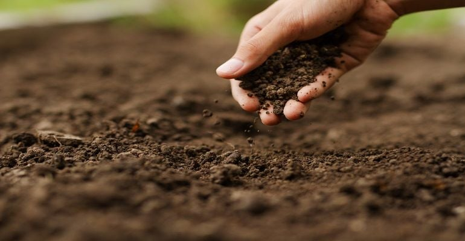

O Dia Nacional da Conservação do Solo é celebrado em 15 de abril e tem como objetivo conscientizar a população sobre a importância de preservar um dos nossos recursos mais preciosos: o solo. O solo é a base da vida. Dele depende a produção de alimentos, a regulação da água, a biodiversidade e o equilíbrio ambiental. No entanto, a erosão, o uso inadequado de agrotóxicos e o desmatamento ameaçam sua fertilidade e sustentabilidade. Nesta data, reforçamos a necessidade de práticas como o plantio direto, a rotação de culturas, o terraceamento e a manutenção da cobertura vegetal, para garantir que as futuras gerações possam contar com solos saudáveis e produtivos. Conservar o solo é conservar a vida.